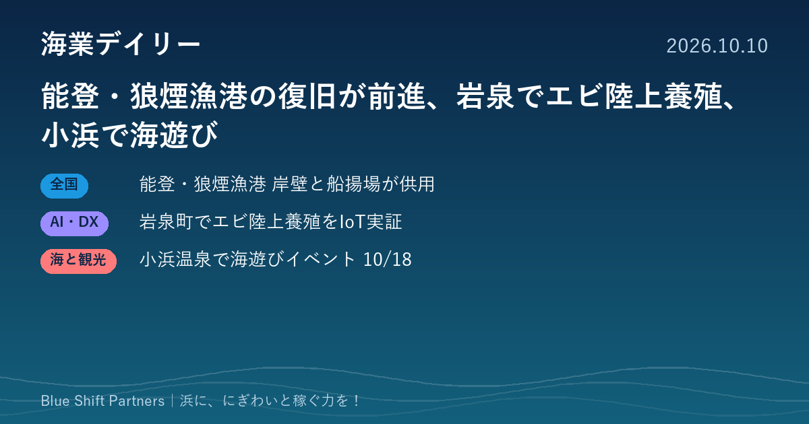

2026.10.10
能登・狼煙漁港の復旧が前進、岩泉でエビ陸上養殖、小浜で海遊び

今日は、能登半島地震で被災した漁港の復旧、震災で使われなくなった施設を活かしたエビの陸上養殖、温泉街の海を舞台にした体験イベントの3件をお届けします。浜の「立て直す力」と「新しく稼ぐ工夫」が見える話題です。
能登・狼煙漁港で岸壁と船揚場の一部が供用開始、地震からの復旧が前進
水産庁は10月9日、石川県珠洲市の狼煙漁港で、令和6年能登半島地震で被災した施設のうち、-3.0m岸壁の残りの部分と隣接する船揚場の一部の供用を始めたと発表しました。地震による隆起で泊地や航路が浅くなり、岸壁も高くなって陸揚げが難しくなっていたため、水産庁の直轄代行による災害復旧工事が進められてきました。今回の供用で地元漁船の陸揚げと船揚げが支障なくできるようになり、残りの施設は令和9年度の復旧完了を目指すとしています。
ここがポイント：漁港の機能回復は、浜の暮らしと稼ぐ力を取り戻す出発点です。復旧の先に、漁港を生かした取り組みをどう育てていくか、被災地の歩みは全国の浜にとっても参考になります。
出典：水産庁「狼煙漁港（狼煙地区）の岸壁と船揚場の一部供用開始について」（2026-10-09）
岩手・岩泉町でエビの陸上養殖実証が本格始動、IoTで水質を見える化
CMエンジニアリング株式会社は10月5日、岩手県岩泉町でクルマエビとバナメイエビの陸上養殖実証を本格的に始めたと発表しました。東日本大震災の津波で被災した旧小本保育園の建物を活用し、株式会社Seaside、小本浜漁業協同組合、レンゴー株式会社が協力しています。同社は水温・pH・溶存酸素などを継続して計測し、クラウド上で可視化するIoT水質モニタリングを担い、2品種の生育を比べながら寒冷地での陸上養殖の可能性を検証します。
ここがポイント：使われなくなった施設を陸上養殖に転用し、漁協も加わる形は、地域の遊休資産を生かすヒントになります。データで水質を管理する仕組みは、少ない人手で養殖を続けるための土台になります。
出典：CMエンジニアリング株式会社（PR TIMES）「岩手県岩泉町でクルマエビ・バナメイエビの陸上養殖実証が本格始動」（2026-10-05）
長崎・小浜温泉で海遊びイベント「GOOD TIDE OBAMA」、10月18日開催
一般社団法人雲仙観光局は10月1日、長崎県雲仙市の小浜温泉街で10月18日にイベント「GOOD TIDE OBAMA」を開くと発表しました。シーカヤックやSUP、フィッシングクルーズを夕日の時間帯も含めて体験でき、ヨガやE-bike、飲食販売も行われます。入場は無料で、シーカヤック・SUP・フィッシングクルーズは有料（事前予約推奨）です。
ここがポイント：温泉街の目の前の海を、夕日の時間帯という価値と組み合わせて体験商品にしている点が参考になります。地域の「海で過ごす時間」を売る発想は、漁港や浜の観光づくりにも応用できます。
出典：一般社団法人雲仙観光局（PR TIMES）「GOOD TIDE OBAMA」開催のお知らせ（2026-10-01）
復旧が進む漁港、遊休施設を使った養殖、海辺の時間を売る体験イベント。どれも「いまある資源を、どう稼ぐ力に変えるか」という同じ問いへの答えです。自分たちの浜で眠っている施設や時間帯を、一度棚卸ししてみてはいかがでしょうか。